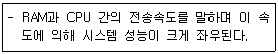
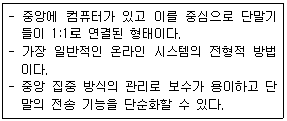

PC정비사-2급 (2010-07-18 기출문제)
1과목: PC유지보수
1. USB 방식의 마우스를 장착한 후 작동이 되지 않는 경우 확인해야 할 사항으로 올바른 것은?
- PS/2 포트의 키보드와 충돌하는 것이므로 키보드를 제거해 본다.
- 장치 관리자에서 USB 컨트롤러가 정상 동작하는지 확인한다.
- 모뎀과 포트가 충돌하는지 확인한다.
- BIOS 설정에서 PS/2 포트의 사용이 중지되어 있는지 확인한다.
(정답률: 82%)

2. Windows XP가 실행된 상태에서 [디스크관리] 기능을 이용하여 HDD의 분할 영역을 삭제 또는 분할하려고 한다. 이때 분할 영역을 변경할 수 없는 볼륨은?
- 쓰기 방지 탭이 붙어 있는 하드디스크 볼륨
- UDMA 기능을 지원하는 하드디스크 볼륨
- Windows 운영체제가 설치된 하드디스크 볼륨
- 512MB 이하의 저용량 하드디스크 볼륨
(정답률: 72%)
3. 컴퓨터를 부팅할 때마다 “BIOS Checksum Error”가 발생한다. BIOS Setup에서 설정을 변경하고 재부팅하면 이상이 없지만 전원을 끈 후에 다시 켜보면 같은 증상이 나타난다. 원인으로 올바른 것은?
- CMOS 배터리 방전이 원인이다.
- HDD의 부트섹터 오류가 원인이다.
- CPU의 무리한 오버클록이 원인이다.
- BIOS의 버전이 낮은 것이므로 업데이트하면 해결된다.
(정답률: 80%)
4. 컴퓨터의 성능 향상을 위한 업그레이드(Upgrade) 방법에 대한 설명 중 잘못된 것은?
- DDR-SDRAM을 추가로 장착할 경우 기존 RAM의 용량과 같은 크기의 RAM을 장착해야 한다.
- 일반적으로 CD-ROM이나 플로피 디스크는 메인보드 업그레이드 후에도 사용이 가능하다.
- CPU만 업그레이드 할 경우 메인보드에서 지원하는 CPU의 종류만 업그레이드가 가능하므로 메인보드 매뉴얼을 잘 살펴본다.
- 그래픽 카드는 메인보드의 그래픽 카드 슬롯 규격을 확인하고 올바른 규격의 그래픽 카드로 업그레이드 한다.
(정답률: 70%)
5. DLL 파일에 대한 설명 중 잘못된 것은?
- 프로그램이 필요로 하는 DLL 파일이 없는 경우, DLL 파일 관련 오류의 원인이 된다.
- 특정 프로그램이 현재 설치되어 있는 DLL 파일이 아니라 구 버전의 DLL 파일이 필요한 경우, DLL 파일 관련 오류의 원인이 된다.
- 프로그램이 요구하는 DLL 파일의 언어 코드가 맞지 않는 경우, DLL 파일 관련 오류의 원인이 된다.
- 프로그램을 실행하면서 참고해야 하는 정보와 데이터가 들어 있어서 프로그램이 정상적으로 작동하는데 결정적인 역할을 하므로, DLL 파일은 독립적으로 실행할 수 있다.
(정답률: 79%)
6. 컴퓨터를 켜면 처음에는 아무 문제가 없으나 몇 분이 지나면 다운되는 현상이 나타난다. 전원을 끄고 잠시 후 다시 켜면 부팅은 되지만 역시 같은 증상이 반복된다. 원인으로 올바른 것은?
- CPU의 냉각팬이 고장 나 CPU의 열을 식혀주지 못한다.
- 메인보드의 BIOS가 손상된 것이 원인이다.
- 그래픽카드의 해상도가 너무 높게 설정되었다.
- 사운드 카드 드라이버가 손상된 것이 원인이다.
(정답률: 81%)
7. Windows의 시스템 리소스를 확보하기 위한 방법으로 잘못된 것은?
- 꼭 필요한 소프트웨어가 아니면 제거한다.
- 시스템 트레이에 등록되는 프로그램은 리소스를 많이 사용하므로 최소화 한다.
- 바탕화면의 테마는 가능하면 많은 색상을 사용하도록 한다.
- 시작 프로그램은 최대한 단순하게 유지한다.
(정답률: 88%)
8. 웜(Worm)과 바이러스에 대한 설명 중 잘못된 것은?
- 바이러스는 감염된 파일을 치료해서 되살리지만 웜은 그 자체를 찾아 제거해야 한다.
- 바이러스는 대개 한 시스템에만 피해를 주지만 웜은 네트워크 자체에 해를 끼친다.
- 바이러스는 자신을 복제하는 것 이외에 다른 문제는 일으키지 않으므로 발견했을 때 그냥 삭제하면 문제를 해결할 수 있다.
- 요즘에는 개인 정보를 몰래 빼가기도 하는 신종 웜까지 등장 했다.
(정답률: 84%)
9. 부팅에 필요한 기본 시스템 정보가 저장된 곳은?
- RAM
- CMOS
- HDD
- CD-ROM
(정답률: 83%)
10. 하드웨어 장치나 드라이버 확장 시 사용자의 편의를 돕기 위해 사용자가 직접 설정할 필요 없이, 운영 체제에서 자동으로 설정해주는 기능으로 올바른 것은?
- Multi Setting
- Plug & Play
- Multi Tasking
- Streaming
(정답률: 90%)
11. Windows XP가 설치된 하드디스크에 필요 없는 파일을 삭제할 때 삭제하면 시스템에 영향을 미치는 확장자로 올바른 것은?
- cpl
- bak
- tmp
- old
(정답률: 61%)
12. Windows XP가 작동되는 구성 값과 설정, 프로그램과 관련된 모든 정보가 저장 되어 있어 Windows XP 부팅 과정부터 로그인, 응용프로그램 구동에 이르기까지 Windows XP 운영체계에서 핵심적인 역할을 담당하고 있는 것으로 올바른 것은?
- cache memory
- flash ROM
- registry
- Windows kernel
(정답률: 74%)
13. Award BIOS를 사용하는 시스템에서 전원을 켰더니 한번은 길게, 세번은 짧게 "삐익~ 삐삐삐" 비프 음이 들리면서 부팅이 되지 않는 경우 예상되는 에러로 올바른 것은?
- 메모리 동작 오류
- 디스플레이 장치 인식 오류
- 전원 불량
- E-IDE 인식 오류
(정답률: 47%)
14. 하드디스크의 논리적인 배드섹터를 수정하기 위해 하드디스크를 초기화하는 작업으로, 하드디스크의 미디어(트랙, 실린더, 섹터)를 다시 만들어 제조공장에서 출하된 상태로 만드는 과정으로 올바른 것은?
- FDISK
- 디스크 조각모음
- Low level format
- RAID
(정답률: 78%)
15. 시작 메뉴 속도를 높이기 위한 레지스트리의 MenuShowDelay 키값으로 올바른 것은?
- 0
- 1
- 16
- 32
(정답률: 60%)
2과목: PC운영체제
16. 컴퓨터에 바이러스가 감염되었을 때 나타나는 증상으로 잘못된 것은?
- 컴퓨터의 속도가 평상시보다 빨라진다.
- 컴퓨터가 자동으로 꺼진다.
- 파일의 크기가 변한다.
- 컴퓨터가 부팅이 되지 않는다.
(정답률: 88%)
17. 인터넷 익스플로러의 옵션에 대한 설명으로 잘못된 것은?
- [연결] 탭에서 인터넷 연결을 설정할 수 있다.
- [일반] 탭에서 인터넷 익스플로러의 시작 페이지를 변경할 수 있다.
- [보안] 탭에서 인터넷 익스플로러의 개인 암호를 수정할 수 있다.
- [프로그램] 탭에서 인터넷 서비스에 사용할 프로그램을 지정할 수 있다.
(정답률: 72%)
18. Windows XP에서 시스템 자동복구 만들기(ASR)에 대한 설명으로 잘못된 것은?
- 컴퓨터가 여러 요인으로 인해 부팅이 되지 않는 경우 응급 복구를 위한 파일과 디스켓을 만든다.
- [시작]-[프로그램]-[보조프로그램]-[시스템 도구]-[백업]메뉴를 선택하여 [백업 및 복원 마법사]를 실행한다.
- Windows XP에서 시스템 자동복구 만들기를 실행할 때 백업이 저장될 위치는 Windows XP가 설치되지 않은 다른 드라이브나 파티션을 선택하는 것이 올바르다.
- [시작]-[설정]-[제어판]-[프로그램 추가/삭제]-[시동디스크]를 선택한다.
(정답률: 76%)
19. Windows XP Home Edition(HE)과 Professional Edition(PE)의 차이점으로 올바른 것은?
- HE는 개인만 사용할 수 있고, PE는 기업사용자만 사용할 수 있다.
- HE는 CPU 2개, PE는 CPU 4개까지 지원한다.
- HE에는 없는 CD Writing 기능이, PE에는 기본기능으로 포함되어 있다.
- HE는 Domain 참여기능이 안되지만, PE는 Domain 참여기능이 있다.
(정답률: 61%)
20. 장치 관리자를 통해서 할 수 있는 작업으로 잘못된 것은?
- 장치의 이상 유무 판단
- 장치 드라이버 업데이트
- 장치의 리소스 확인
- 드라이버의 드라이버 서명 확인 여부
(정답률: 70%)
21. 디스크 관리에 대한 설명 중 잘못된 것은?
- Windows XP의 디스크 관리를 실행하기 위해 [제어판]-[관리도구]-[컴퓨터관리]-[디스크관리]를 실행한다.
- 새로운 파티션을 생성하기 위하여 디스크 위에서 마우스의 오른쪽 버튼을 클릭하여 파티션 만들기를 수행한다.
- 새로운 드라이브를 생성한 후 꼭 재부팅을 하고 포맷 과정을 거쳐야 한다.
- 논리 드라이브를 삭제하면 해당 드라이브 내의 모든 데이터도 함께 상실 된다.
(정답률: 63%)
22. Windows에서 발생되는 인터럽트(Interrupt)의 종류로 잘못된 것은?
- 상태 전이 인터럽트
- 슈퍼바이저 호출 인터럽트
- 재시작 인터럽트
- 입출력 인터럽트
(정답률: 50%)
23. 디스크 조각 모음을 사용할 수 있는 드라이브로 올바른 것은?
- CD-ROM 드라이브
- 로컬 하드디스크 드라이브
- 네트워크 드라이브
- DVD-ROM 드라이브
(정답률: 82%)
24. Windows XP에서 지원하는 ‘시스템 원격 종료’ 기능에 대한 설명 중 잘못된 것은?
- 시스템 원격 종료를 위해서는 해당 컴퓨터의 시스템 관리자 권한을 갖고 있어야 한다.
- 명령 프롬프트에서 실행하는 Shutdown을 이용하면 내 컴퓨터를 종료할 수 있을 뿐만 아니라 원격 컴퓨터도 종료할 수 있다.
- 예를 들어 같은 LAN상에 있는 \\ohmpalos라는 컴퓨터를 원격으로 1분후에 종료하려면 ?shutdown -s -f -m \\ohmpalos -t 60? 명령을 사용한다.
- Windows XP에서 시스템 원격 종료 기능을 이용하기 위해서는 서비스팩 2 이상이 설치되어 있어야한다.
(정답률: 65%)
25. Windows XP 컴퓨터의 레지스트리 기본 구성 항목으로 잘못된 것은?
- HKEY_CURRENT_USER
- HKEY_USERS
- HKEY_CLASSES_ROOT
- HKEY_DYN_CONFIG
(정답률: 65%)
26. 현재 사용하고 있는 Windows XP 운영체제가 정품인지 확인하기 위한 명령어로 올바른 것은?
- oobe/msoobe /d
- oobe/msoobe /c
- oobe/msoobe /b
- oobe/msoobe /a
(정답률: 65%)
27. Windows XP의 인터넷정보서비스(IIS)의 설명으로 잘못된 것은?
- 웹 서버 서비스를 제공한다.
- 파일 서버 서비스를 제공한다.
- SMTP 서비스를 제공한다.
- Windows 98 버전부터 기본 제공되는 기능이다.
(정답률: 73%)
28. 시작 메뉴의 [제어판] - [프로그램 추가/제거] - [Windows 구성요소 추가/제거] 항목을 선택하였을 때 Windows 구성 요소로 잘못된 것은?
- 프린터
- Windows Media Player
- 보조프로그램 및 유틸리티
- 관리 및 모니터링 도구
(정답률: 60%)
29. Windows XP에서 처음 시작할 때 자동 실행되는 프로그램을 수정할 수 있는 곳으로 잘못된 것은?
- 레지스트리
- msconfig.exe
- 시작 프로그램 폴더
- system.ini
(정답률: 53%)
30. Windows XP에서 기본적으로 제공하는 아웃룩 익스프레스의 특징으로 잘못된 것은?
- 여러 개의 메일 및 뉴스 계정을 관리할 수 있다.
- 메일을 받은 사람에게 읽음 확인 메일을 요청할 수 있다.
- 보안 메시지 보내기와 받기를 할 수 있다.
- 첨부 파일의 용량 제한을 설정할 수 있다.
(정답률: 65%)
3과목: PC주변기기
31. 플래시 메모리에 대한 설명 중 잘못된 것은?
- HDD와 비교하여 충격에 강하며, 입출력 속도가 빠르다.
- 비휘발성 메모리이다.
- HDD와 비교하여 가격이 저렴하다.
- 지우고 다시 쓰기가 가능하다.
(정답률: 54%)
32. 그래픽 작업 시 마우스의 단점을 보완하기 위해 고안된 것으로, 연필과 붓처럼 사용할 수 있는 포인팅 디바이스를 이동시켜 위치를 인식시키는 장치로 올바른 것은?
- 조이스틱
- 디지털 키보드
- 트랙볼
- 디지타이저
(정답률: 75%)
33. 정보 저장 밀도의 단위로 올바른 것은?
- CPS, LPM
- BPI, TPI
- BPS, CPS
- PPM, LPM
(정답률: 62%)
34. CPU에서 부동소수점 연산장치인 FPU(Float Process Unit)의 성능이 중요한 이유로 올바른 것은?
- 워드프로세서 프로그램을 많이 사용하기 때문에
- 데이터베이스 프로그램을 많이 사용하기 때문에
- 3D 프로그램을 많이 사용하기 때문에
- 인터넷을 많이 사용하기 때문에
(정답률: 60%)
35. CD-ROM 타이틀을 제작하는 과정에서 ‘Tracking Error’ 메시지가 자주 출력되는 경우 원인으로 올바른 것은?
- CD-R 기기의 버퍼 용량이 부족하다.
- CD-R 미디어 자체 이상이다.
- 원본 DATA에 문제가 있다.
- CD-R 기기가 지원하지 않는 형식의 CD-ROM 타이틀을 만들려고 했다.
(정답률: 38%)
36. 하드디스크를 구입하여 설치하고자 할 때 잘못된 것은?
- IDE 방식의 하드디스크는 Master와 Slave를 구분하여 설치하여야 하므로, 설치 전 확인하여 점퍼설정을 한다.
- S-ATA 방식의 하드디스크는 Master와 Slave를 구분하는 점퍼 설정이 필요 없다.
- SCSI 방식의 인터페이스에서는 여러 개의 하드디스크를 체인 식으로 연결할 수 있다.
- IDE 방식과 S-ATA 방식의 하드디스크는 혼용할 수 없다.
(정답률: 61%)
37. 프린터의 인쇄 품질을 나타내는 단위로 올바른 것은?
- DPI
- PPM
- RPM
- CPS
(정답률: 77%)
38. 가전기기와 PC를 연결하기 위한 인터페이스로 총 64개의 주변 기기와 100Mbps, 200Mbps, 400Mbps등의 속도를 지원하는 것은?
- IEEE1394
- SCSI
- DMA
- USB
(정답률: 69%)
39. 컴퓨터에 사용되는 저장 장치 중 자성 물질을 이용하지 않는 것으로 올바른 것은?
- Floppy Disk
- Hard Disk
- CD-ROM
- Magnetic Tape
(정답률: 61%)
40. 다음은 무엇에 대한 설명인가?

- FSB
- USB
- AGP
- ETEQ
(정답률: 78%)
41. 모니터를 켰을 때 화면이 심하게 떨리는 경우 이를 바로 잡기 위해 조정해야 할 항목으로 올바른 것은?
- 메모리 조정
- RAMDAC 조정
- 화면 재생 빈도 조정
- 기본 글꼴 크기 변경
(정답률: 75%)
42. 전기적으로 정보를 기록할 수 있을 뿐 아니라, 자외선을 비춰서 정보를 지울 수 있는 것으로 올바른 것은?
- PROM
- EPROM
- Mask ROM
- EEPROM
(정답률: 63%)
43. PC에서 사용하는 메모리 용량 중 바이트(Byte)에 대한 설명으로 올바른 것은?
- 1 바이트는 8 비트(Bit)이며, 영어 알파벳 한 글자를 표현할 수 있다.
- 1 바이트는 16 비트(Bit)이며, 영어 알파벳 한 단어를 표현할 수 있다.
- 1 바이트는 8 비트(Bit)이며, 한글 한 글자를 표현할 수 있다.
- 1 바이트는 16 비트(Bit)이며, 한글 한 단어를 표현할 수 있다.
(정답률: 77%)
44. RF방식의 마우스에 대한 설명으로 올바른 것은?
- 방해물이 있으면 통과하지 못하고 10M이내의 수신거리에서만 사용가능하다.
- 무선 입출력 장치는 항상 직선 방향으로 마주 보고 있어야한다.
- 무선주파수 방식이다.
- IR방식이라고도 한다.
(정답률: 65%)
45. 키보드에 관한 설명 중 올바른 것은?
- 전자식은 키 밑에 있는 두 개의 금속 접촉을 통한 전류의 흐름을 이용한다.
- 기계식은 키 밑의 스프링이 압축되면서 흐르는 전하의 양을 줄임으로서 키의 눌림 상태를 파악한다.
- 키보드에서 파악된 키의 위치는 바이오스를 통해 키보드 스캔 코드로 변환된다.
- 영문 드보락 자판은 최초의 표준 영문 자판이다.
(정답률: 49%)
4과목: PC네트워크
46. IPX 프로토콜의 특징으로 잘못된 것은?
- 데이터를 전송할 때 제대로 전송되었는지 확인이 가능하다.
- 패킷의 라우팅에 유연성이 있다. 이는 미리 결정된 라우터가 없기 때문이다.
- 패킷의 도착 순서를 보장할 수 없다는 단점이 있다.
- 상대의 주소만 변경시키면 복수의 목적지로 송신할 수 있다.
(정답률: 34%)
47. 다음에서 설명하는 통신망의 구성 형태로 올바른 것은?

- 버스형
- 망형
- 스타형
- 링형
(정답률: 76%)
48. 네트워크에서는 어떤 하드웨어나 운영체제를 사용하든 자료를 공유할 수 있다. 이렇게 다른 플랫폼 사이에서도 자료를 공유할 수 있도록 하기 위해 ISO에서 제안한 네트워크 구축 참조 모델로 올바른 것은?
- Network 7 Layer
- OSI 7 Layer
- Network 4 Layer
- OSI 4 Layer
(정답률: 78%)
49. 라우터에 대한 설명으로 잘못된 것은?
- 동일한 전송 프로토콜을 사용하는 분리된 네트워크를 연결하는 장치이다.
- 인터넷에서 각 네트워크를 연결시켜 주는 장비이다.
- 라우팅 테이블을 이용하여 접속 경로를 설정한다.
- 경로를 선택할 때 연결이 비효율적인 경로를 선택하여 패킷을 보낸다.
(정답률: 67%)
50. 무선 랜의 기본 전송 기술 중 DSSS(Direct Sequence Spread Spectrum) 방식에 대한 설명 중 잘못된 것은?
- 넓은 대역으로 데이터를 확산하여 전송한다.
- 부호 분할 다중 저속 (CDMA)에 사용되고 있다.
- 송신측과 수신측에서 주파수 위치를 변화시켜 통신하는 방식이다.
- 2.4GHz~2.5GHz 대역의 주파수를 사용한다.
(정답률: 47%)